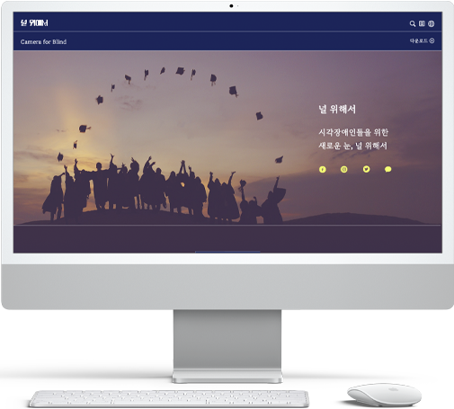
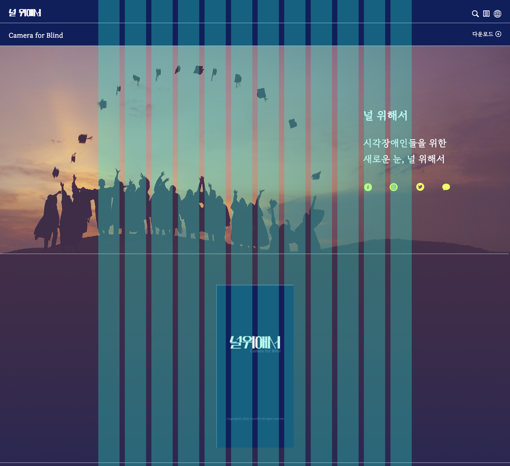
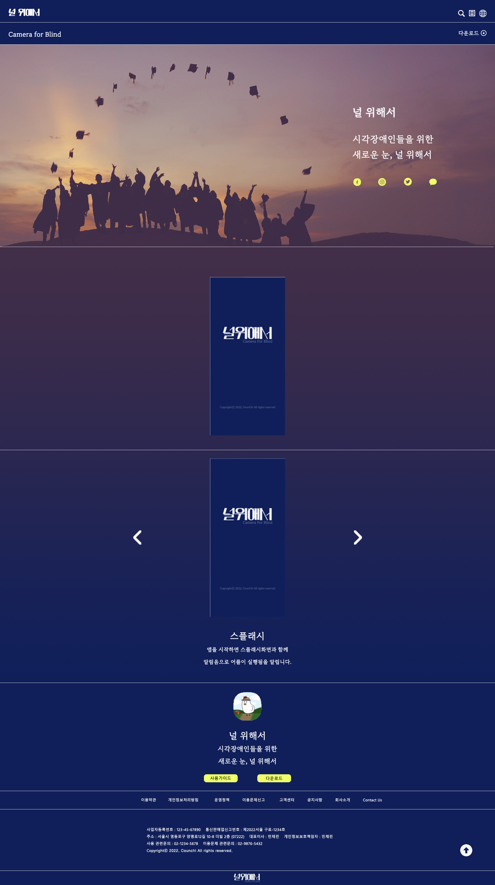

메인페이지는 소비자가 어플을 다운받을 수 있도록 헤더 부분에 다운로드 버튼을 배치하였습니다.
또한 어플의 실행 영상과 어플의 기능에 대한 설명을 넣어 제품에 대한 정보를 알 수 있도록 하였습니다.

01
널 위해서 디자인 프로세스


GRID SYSTEM
Full Width : 1920px
Grid Width : 1200px
Column Width : 85px
Gutter Width : 25px
Number of Column : 12
COLOR SYSTEM
기존 어플을 홈페이지로 리뉴얼을 진행하여 주 타겟층인 시각장애인들이 구분하기 쉬운 노란색 계열을 포인트 색상으로 지정하였습니다.
전체적인 디자인은 어플의 메인 색상과 동일한 색상으로 지정하였습니다.
TYPOGRAPHY
기존 어플을 홈페이지로 리뉴얼을 진행하여 주 타겟층인 시각장애인들이 구분하기 쉬운 노란색 계열을 포인트 색상으로 지정하였습니다.
전체적인 디자인은 어플의 메인 색상과 동일한 색상으로 지정하였습니다.
02
널 위해서 메인페이지
